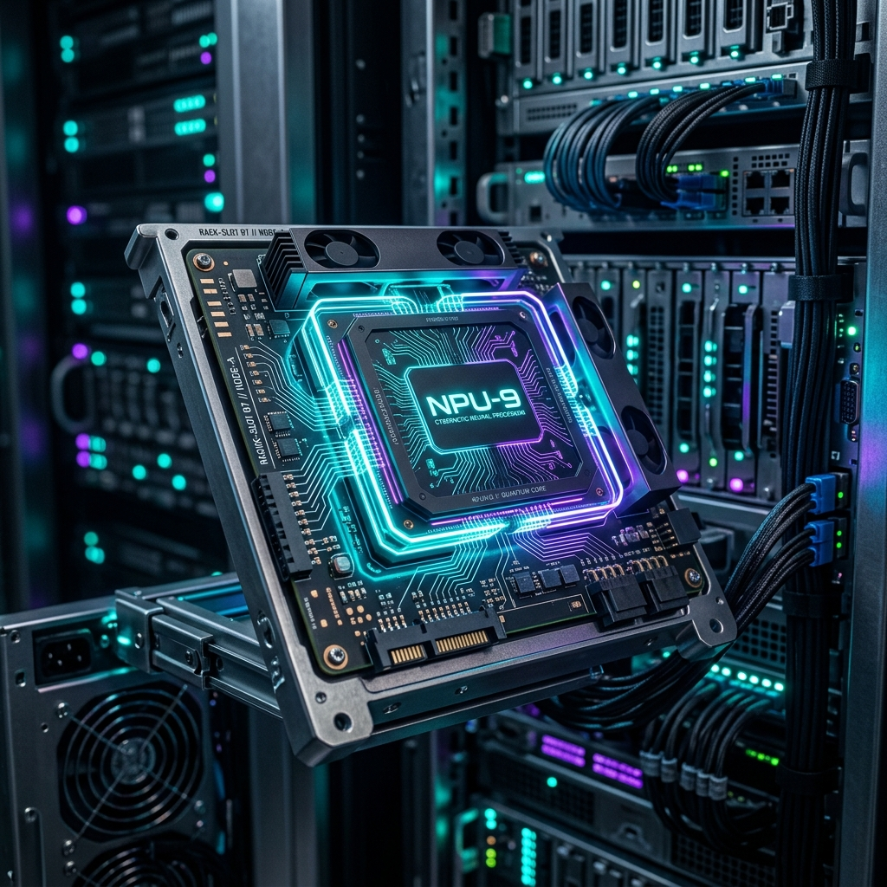

Conquering the Silicon: Building a Custom "Ollama" Orchestrator for the AX8850 NPU (Part II)
[!IMPORTANT] RETROSPECTIVE & CORRECTION: When we wrote this post, we believed we were fighting hard silicon/compiler constraints that required reverse-engineering closed-source PyArmor binaries and writing custom
pexpectwrappers. We were wrong. We later discovered that the issues were caused entirely by simple packaging path resolution bugs in the vendor shell scripts and a buggy JSON tokenizer parser that failed on EOS array IDs. For the accurate, clean, and native way to deploy LLMs on this hardware, read:

The promise of Edge AI hardware is intoxicating: running blazing-fast, power-efficient local inference without tying up a $1,000+ workstation GPU or bleeding money to cloud API providers.
In Part I of this series, we deep-dived into reverse-engineering the Axera Pulsar2 compiler, patching PyArmor binaries in-flight, and leveraging the Radxa AX-M1 board's hardware compatibility with older AX650 binaries to host models natively on silicon.
But compiling the models was only half the battle. Getting them to serve reliably over a clean network API revealed a host of SDK bugs, memory registration collisions, and server-level deadlocks.
Here is the story of how we bypassed the manufacturer's broken C++ server stack, engineered a physical alignment hack to fix Logit Collapse, and built a custom "Universal Loader" orchestrator from scratch to hot-swap models on the silicon on-the-fly.
Act I: The Gemma Collapse & The "2047" Hardware Alignment Hack
Our first real runtime test was deploying a pre-compiled, abliterated version of Gemma-4. We pushed the model through the compiler, successfully mapped the INT4 weights into the NPU's Contiguous Memory (CMM) blocks, booted the gateway, and queried the model with a simple prompt: "What is 2+2?"
The response? A never-ending loop of repetitive token soup:
"factfactfactfactfactfactfactfact..."
We had hit a classic Logit Collapse. After comparing compiler debug dumps and monitoring the physical memory allocation calls, we discovered the root cause was a physical gating alignment fault in the NPU's hardware architecture.
The AX8850 silicon operates on static CMM registers that require matrix dimensions to align perfectly with hardware-level boundary lines (typically multiples of 32 or 512 bytes). Crucially, the NPU's internal execution engine automatically adds +1 token to the context window array allocation for its own End-of-Sentence (EOS) tracking.
When we compiled the model with a standard --kv_cache_len 2048 flag, the inference runtime attempted to allocate a 2049 matrix. This off-by-one mismatch caused the physical hardware gate allocations to drift, scrambling the attention matrix math and rendering the output useless.
Expected Array Alignment (Multiples of 512 bytes):
[--- 512 ---][--- 512 ---][--- 512 ---][--- 512 ---] = 2048 bytes (Perfect Gate Alignment)
Off-by-One Hardware Drift:
[--- 512 ---][--- 512 ---][--- 512 ---][--- 512 ---][ 1 ] = 2049 bytes (Memory Boundary Drift -> Logit Collapse)
The Fix
We modified our compilation scripts to offset the boundary drift by setting --kv_cache_len 2047.
The engine performed its internal 2047 + 1 = 2048 math, landed perfectly on the NPU's physical register boundary, and the logic loops immediately cleared. We also wrote a Python patching helper to inject dummy 1.0 float16 LayerNorms into the model's .safetensors headers to satisfy the Pulsar2 tiler's strict topology validation.
Act II: The Catastrophic C++ HTTP Deadlock
With the memory boundaries aligned, we staged DeepSeek-R1-Distill-Qwen-1.5B. The weights loaded into the NPU memory block flawlessly, but whenever we hit the vendor's packaged C++ HTTP API server (main_api_axcl_x86) with a standard OpenAI-formatted chat completions payload, the process crashed:
500 Internal Server Error (type must be string, but is null)
We wrote multi-threaded test harnesses to inspect the HTTP handler's behavior and discovered that the manufacturer's C++ JSON array iterator was fundamentally broken. It was unable to handle optional parameters or nested keys common in standard modern API requests. When it encountered a key it didn't expect, the server didn't just reject the request, it leaked the socket descriptor, leading to cascading [Errno 9] socket deadlocks that completely froze the NPU driver.
The provided C++ server was a dead end. But we didn't need their server. We just needed their hardware CLI.
Act III: Bypassing the Server (Building the Universal Loader)
Hidden deep within the Radxa NPU SDK was a native command-line interface tool (main_axcl_x86). This CLI runs locally inside the LXC container, bypasses the HTTP networking stack entirely, and communicates directly with the underlying axcl kernel driver over standard I/O streams.
Instead of trying to patch closed-source C++ HTTP wrappers, we decided to route around them. We built a custom FastAPI Orchestrator in Python to act as our NPU hypervisor.
Using pexpect, our orchestrator spawns the vendor's interactive NPU CLI binary in a hidden pseudo-terminal (PTY) session. The orchestrator listens for standard, clean OpenAI-compliant JSON payloads over the network, translates them into the raw console input format, and silently feeds them directly into the NPU's running terminal interface.
[Incoming OpenAI API Request]
│
▼
┌───────────────────────────────┐
│ FastAPI Python Orchestrator │
├───────────────────────────────┤
│ Intercepts JSON payload │
│ Translates parameters │
└───────────┬───────────────────┘
│ (via pexpect PTY)
▼
┌───────────────────────────────┐
│ NPU CLI Console Process │
├───────────────────────────────┤
│ Communicates via standard I/O │
└───────────┬───────────────────┘
│
▼
[AX8850 Bare-Metal NPU]
But we wanted a tool that felt as seamless as Ollama. So we programmed the orchestrator to act as a Dynamic Universal Loader:
- Auto-Teardown: When a request arrives for a model that isn't currently running, the orchestrator issues a
pkillto the active CLI process. - CMM Cache Flush: It runs a driver call to completely clear the NPU's contiguous memory allocation blocks to avoid memory fragmentation.
- Dynamic Topology Parsing: It parses the new model's
config.jsonfolder on-the-fly, reading the layers, embedding sizes, and tokenizer paths. - On-the-Fly Command Construction: It compiles the boot parameters dynamically and launches a fresh CLI instance mapping the requested model to the NPU.
- Interactive Wait Hook: It monitors the PTY stream, waits for the CLI's ready prompt (
>), and immediately serves the waiting inference query.
Act IV: Injecting Bare-Metal Telemetry
By wrapping the raw CLI inside our Python hypervisor, we gained access to the developer output streams. The native NPU CLI dumps detailed, raw execution metrics to stdout. We wrote non-blocking regex filters to capture Time-to-First-Token (TTFT) and Tokens-Per-Second (TPS) output lines in real-time.
To make the system a true production-grade appliance, we wanted physical hardware telemetry. We spawned background threads in the orchestrator to poll:
- Junction Temperature: Parsed from
/sys/class/thermal/thermal_zone0/temp - CPU & RAM Delta: Tracked via
psutilsystem metrics
We customized our API output structure to inject these hardware analytics directly into the standard OpenAI-compliant usage block of the API response:
{
"model": "DeepSeek-R1-Distill-Qwen-1.5B",
"choices": [
{
"message": {
"role": "assistant",
"content": "To evaluate 2/2 + 2*2, we follow the standard order of operations (PEMDAS/BODMAS):\n\n1. Division: 2 / 2 = 1\n2. Multiplication: 2 * 2 = 4\n3. Addition: 1 + 4 = 5\n\n**Answer:** 5"
}
}
],
"usage": {
"prompt_tokens": 14,
"completion_tokens": 76,
"total_tokens": 90,
"metrics": {
"tps": 10.88,
"ttft_ms": 392.15,
"total_time_s": 7.34,
"hardware": {
"npu_temp_c": 27.8,
"npu_delta_t": 0.0,
"ram_usage_mb": 1866.67,
"cpu_load_pct": 26.7
}
}
}
}
Next Steps
By routing around the vendor's buggy C++ HTTP server and writing a lightweight FastAPI orchestrator, we successfully transformed a rigid, closed-source NPU board into a dynamic, Ollama-like model API gateway. With the card idling at a cool 27.8°C under load, we have a highly efficient, air-gapped inference server running on our local network.
Next, we are planning to hook this custom NPU gateway endpoint into a dedicated LiteLLM router and feed it vector database embeddings to drive our autonomous offsec agent pipelines.
Stay tuned for Part III, where we'll explore integrating edge inference into automated red team command-and-control loops.